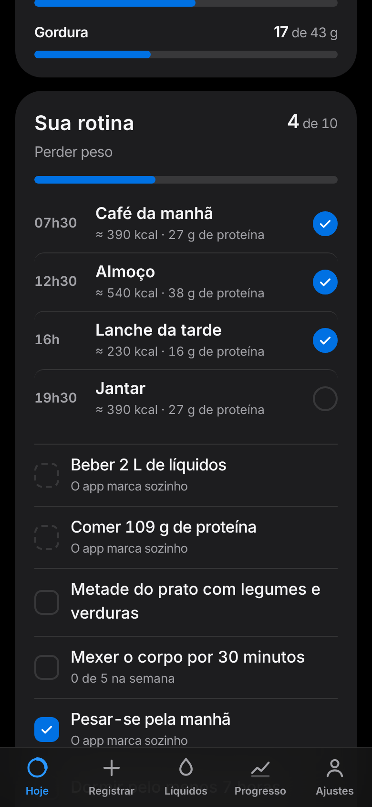

Registro por frase.
Escreva “2 ovos mexidos e 1 pão francês”. O app separa os itens, estima as porções e mostra tudo para você conferir antes de salvar.
- Ovo de galinha, frito · 2 un240 kcal
- Pão francês · 1 un150 kcal
Novo · Escolha o seu objetivo e receba uma rotina pronta. Criar contaAbrir o Leve
Leve
Perder peso, ganhar massa, definir ou só comer melhor. O Leve monta as calorias, a proteína e os horários, e responde em segundos quanto ainda cabe no dia.
Prefere sem cadastro? Usar só neste aparelho
Você já está conectado neste aparelho.

Você escreve como fala. O Leve faz as contas e mostra de onde vieram os números.
Escreva “2 ovos mexidos e 1 pão francês”. O app separa os itens, estima as porções e mostra tudo para você conferir antes de salvar.
Tabela TACO (NEPA/UNICAMP), código de barras pelo Open Food Facts e 32 receitas típicas com a conta à mostra.
Refeições a partir da hora em que você acorda, com calorias e proteína de cada uma, e hábitos que se marcam sozinhos.
Água e outras bebidas em ml ou litros, com horário. Bebida alcoólica é registrada, mas não conta para a meta.
300 ml de suco de uva têm 174 kcal. O Leve sugere água ou refrigerante zero e explica por quê. Sem culpa: vale para a próxima vez.
Cada objetivo tem o seu cálculo e a sua rotina. Dá para mudar quando quiser.
Escolha no cadastro. O Leve faz o resto.
No ritmo que você escolher, de 0,25 a 0,75 kg por semana, sempre dentro das travas.
Proteína: 1,6 g por kg · movimento e vegetais
De 200 a 500 kcal acima do gasto, para o ganho ser mais músculo do que gordura.
Proteína: 1,8 g por kg · treino de força
Déficit de 10% do gasto e proteína alta para preservar os músculos.
Proteína: 2,0 g por kg · treino de força
Comer o quanto você gasta e acompanhar a tendência uma vez por semana.
Proteína: 1,2 g por kg · frutas e verduras
Comida de verdade, 400 g de frutas e verduras no dia, água, sono e movimento.
Guia Alimentar para a População Brasileira
Calmo, direto, sem julgamento. Passar da meta não deixa nada vermelho.



Telas reais do app, com dados de exemplo.
Travas que nenhuma meta atravessa, em todo lugar onde uma meta é calculada.
O Leve não substitui médico ou nutricionista. As metas são estimativas baseadas em fórmulas populacionais (Mifflin-St Jeor e a faixa de IMC da OMS). Gestantes, lactantes e pessoas com condições de saúde devem seguir orientação profissional.
Tudo no aparelho, ou uma conta para usar o mesmo diário em qualquer lugar.
Com conta
Sem conta
Sem loja de aplicativos: abra o endereço e adicione à tela inicial.
Crie a conta, escolha o objetivo e responda algumas perguntas. O plano e a rotina saem na hora.